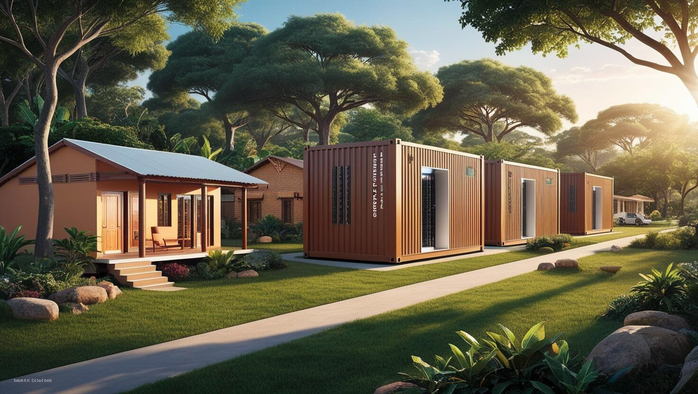
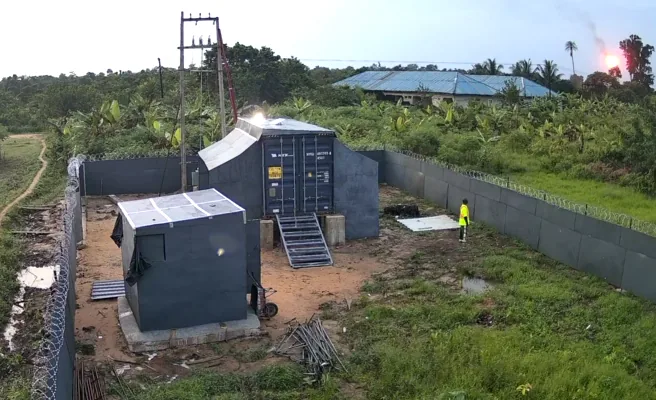
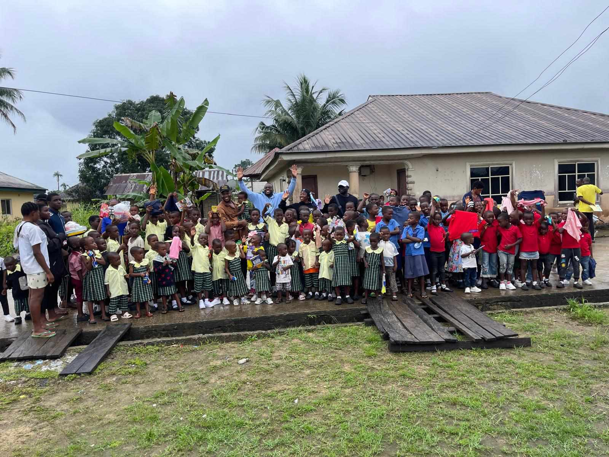
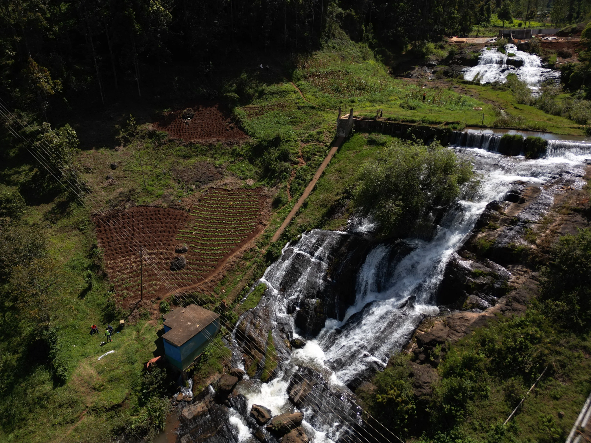

How Bitcoin Mining Can Build Schools, Hospitals, and More

Bitcoin isn't just a digital currency; it's a catalyst for social change. While debates continue about its future as the world's currency or a passing fad, we at NRG Bloom believe there's a more immediate and impactful conversation to be had. Regardless of where you stand on Bitcoin's long-term viability, its potential to drive positive change today is undeniable. We're harnessing Bitcoin mining to create revenue streams for impoverished, off-grid Nigerian communities, transforming wasted energy into tangible community benefits like schools and hospitals.
The Power of Bitcoin Mining for Social Good
Understanding Bitcoin Mining
Bitcoin mining is the process of discovering new blocks to add to the Bitcoin blockchain. This energy-intensive endeavor relies on the proof-of-work concept, where miners solve complex mathematical problems to validate transactions. As a reward for their efforts and energy expenditure, miners receive newly minted Bitcoins.
Economic Potential
Bitcoin mining offers a unique opportunity to generate wealth by obtaining Bitcoin at a cost lower than its market price. According to the Cambridge Centre for Alternative Finance, the average cost to mine one Bitcoin is approximately $46,055. As Bitcoin's value fluctuates and potentially rises, miners can accumulate rewards that may appreciate over time, creating significant economic potential.
Redirecting Rewards
At NRG Bloom, we've structured partnerships with off-grid communities through hash rate sharing. While these communities may be financially impoverished, they are rich in stranded energy resources—specifically, natural gas flares from nearby oil and gas industries. By receiving a percentage of our total hash rate, both parties thrive:
- For Us: We're protected against market volatility, as energy costs align with Bitcoin prices rather than being fixed.
- For the Community: They gain an income stream that grows as Bitcoin's value increases.
Our operations also create local jobs in areas suffering from unemployment. We train residents as security personnel, data technicians, and ASIC repair technicians, empowering them with valuable skills.

Real-World Examples of Bitcoin for Community Development
Case Study 1: NRG Bloom in Bayelsa State, Nigeria
In Bayelsa State, we've deployed our first 0.5 MW container and plan to expand up to 5 MW. This initiative has already created security jobs, and we're establishing an ASIC repair center to train locals in maintaining and repairing mining equipment. The community's share of the revenue is being reinvested into enhancing local schools and hospitals, directly improving the quality of life.

Case Study 2: Gridless Compute in Kenya and Malawi
Gridless Compute is another excellent example of Bitcoin mining for social good. They monetize wasted hydro power in rural mini-grids across Kenya and Malawi. By integrating Bitcoin mining into these communities, they help independent power producers become financially viable. The benefits for the communities include:
- Improved Grid Stability
- More Affordable Power
- Increased Connectivity

Hypothetical Scenarios: Mining for a Better Tomorrow
Building Schools
Imagine mining profits funding the construction of educational facilities, providing children with access to quality education they've never had before. This investment not only builds schools but also fosters a generation empowered by knowledge.
Healthcare Facilities
Consider how mining revenues could finance hospitals and clinics in remote areas, offering essential healthcare services. Improved health outcomes lead to stronger, more resilient communities.
Sustainable Development
By monetizing wasted energy, communities can reinvest profits into local development. This creates jobs and enhances infrastructure, reducing the need for residents to leave in search of better opportunities. Sustainable development becomes a reality, not just a distant goal.
NRG Bloom’s Vision and Initiatives
Our Mission
At NRG Bloom, we're committed to leveraging Bitcoin mining for social good. We transform Africa's untapped potential by utilizing wasted energy—energy without a buyer—to power Bitcoin mining. As the sole buyer of this surplus energy, we reduce waste and drive economic growth in remote communities.
Current Projects
Our ongoing initiatives focus on community development through energy monetization and job creation. We're not just mining Bitcoin; we're empowering communities by providing education, training, and financial opportunities.
Future Plans
We're planning to:
- Expand in Our Current Community: Grow our operations in Bayelsa State to maximize impact.
- Replicate Our Model: Implement our successful structure in other Nigerian and African communities.
- Diversify Energy Sources: Focus on other renewable or carbon-negative energy sources beyond flare gas.
Our goal is to create a network of empowered communities across Africa, each harnessing wasted energy for sustainable growth.
Joining the Movement: How You Can Help
Support NRG Bloom
We invite you to join us in unlocking Africa's energy for a brighter future. Your support can help us expand our operations and reach more communities in need.
Investment Opportunities
If you're an investor seeking socially responsible ventures, consider partnering with us. Together, we can create sustainable solutions that offer both economic returns and social impact.
Spread the Word
Help us amplify our vision by sharing our story within your networks. Awareness is the first step toward meaningful change.
Conclusion
Bitcoin mining holds transformative potential for community development. By turning wasted energy into wealth, we can fund schools, hospitals, and essential infrastructure, driving sustainable growth in underserved regions. Technology and finance aren't just tools for profit—they're powerful agents for social good.
References:
https://ccaf.io/cbnsi/cbeci/mining_map/mining_data